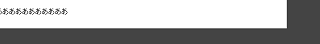
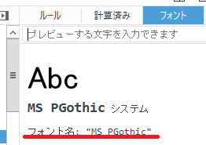
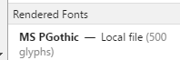
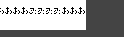
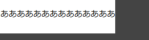
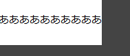
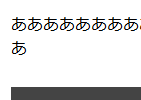
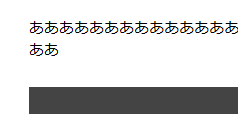

font-sizeに合わせた最適なwidth幅
コンテンツ部分のwidthをスタイルシートで指定する際、font-sizeやfont-familyなどに応じてぴったり合わせるとガタガタにならずに表示されます。ただ、文中に英数字などが入ると、どのみち少しはガタガタにはなりますが、できるだけ合わせておくとよいでしょう。
CSSに何も指定しないデフォルトのfont-size
まず、デフォルトの状態ですが、スタイルシートでfont-familyやfont-sizeを何も指定しなかった場合、ブラウザの種類やバージョンにもよりますが、windowsでは「MS PGothic」の「16px」で表示されるかと思います。（※macは省略）
なので、デフォルトの16pxで500文字を配置した場合、8,000pxのwidth幅でぴったり収まる計算になりますが、実際に表示してみるとぴったりしません。かなり余白があいてしまいます。

これはフォントが「MS PGothic」なので、「p」が付いているプロポーショナルフォントになるため、文字に応じて幅が変わってしまうからです。このfont-familyを調べるには、調べる文字を選択して「右クリック - 要素の検証」から調べることができます。
・firefoxの例

・chromeの例

一方、等幅フォントを使って指定すれば、文字の幅に変更はありません。なので、「p」をとってfont-family: "MS Gothic";で指定してみると、等幅フォントで表示されるためぴったり収まることになります。
■font-family: "MS Gothic";

また、一般的に指定されていることの多い日本語フォントの「メイリオ」も等幅フォントなので、こちらもぴったりとおさまります。
■font-family: "メイリオ";

デフォルトの状態ではプロポーショナルフォントとなってしまうため、まずはfont-familyに等幅フォントの「メイリオ」などを指定した状態でwidthを指定することをおすすめします。
一般的に、フォントサイズをデフォルトの16pxで表示させる場合、１行の文字サイズをあまり広くしても見えづらくなるため、１行を40文字ぐらいとすると、16px×40文字でwidth幅を640px程度に設定するのがぶなんかと思います。
同じように、39文字なら624px、38文字なら608pxになるかと思いますが、そのあたりを設定しておくとぴったりおさまるはずです。
font-sizeを「％」で相対指定する場合のwidth幅
一方、font-sizeをパーセントで相対指定する場合、デフォルトの状態の「font-size:16px;」が「font-size:100%;」になります。なので、font-size:100%で500文字を配置した場合、16px500文字＝8,000pxのwidth幅でぴったりおさまります。

ちなみに、font-size:100.1%などとすると１文字ずれてしまうので、コンマ単位で大きさはカウントされていることになります。

できるだけ、コンマ単位で正確な値を指定した方がよいでしょう。
次に、font-size15pxの場合を考えてみますと、単純に考えれば、15px÷16pxで0.9375となりますので、font-size:93.75%;が15pxの値になるはずです。
なので、等幅フォントのfont-size:93.75%;で500文字とすると、15px500文字で7,500pxのwidth幅でぴったりおさまるはずです。これは実際に表示してみても、ぴったりおさまります。
ちなみに、emで指定する場合はfont-size:0.9375em;になりますが、これでもぴったりです。
一方、font-size:94%;にすると改行されてしまい、２文字分がずれてしまいます。

通常、１行は30〜50文字程度ですので、93.75%でも94%でもたいした違いはありませんが、500文字程度まで増やせばズレが発生してきますので、わずかな違いでもカウントされていることになります。このわずかなズレで、文字数とwidth幅がぴったり合わなくなってしまうケースがあり、右端がガタガタになってしまうこともあります。
できるだけ、きっちり計算した上でwidht幅を指定されるとよいでしょう。
同じように、14pxなら87.5%、13pxなら81.25%、12pxなら75%の計算になりますので、ご参考ください。